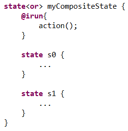
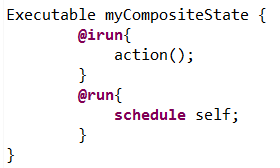
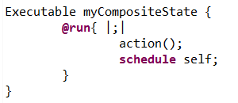
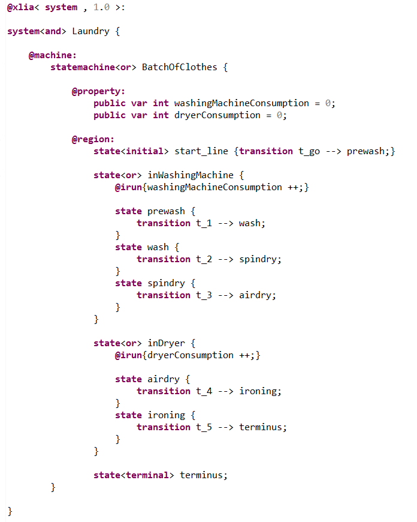
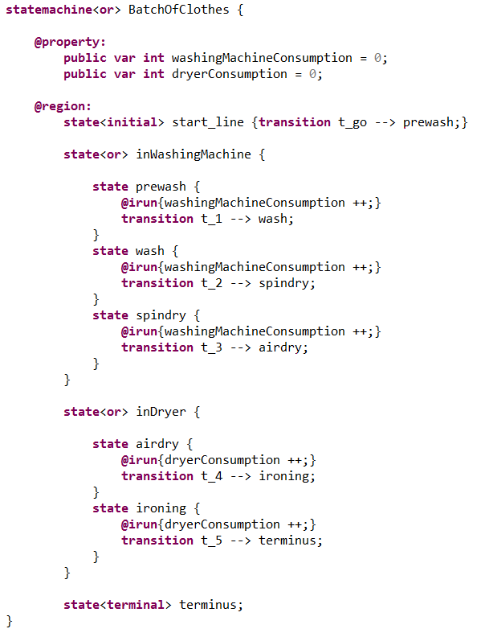
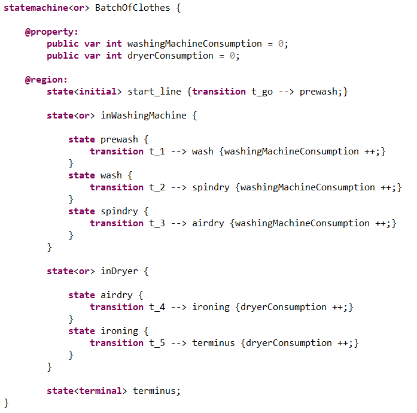
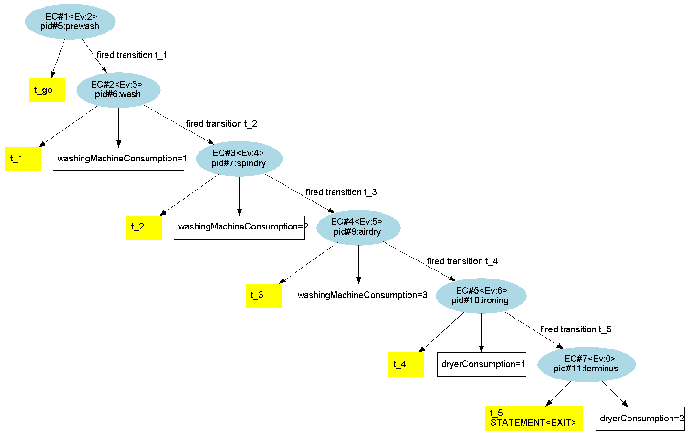

When we have a composite state :
When we implement the @irun{...} activity primitive and we put an instruction "action();" inside such as below :
The XLIA compiler interprets it as in the following :
Which is equivalent to :
We must consider a composite state :
The following example is that of a batch of dirty clothes that is being washed. The clothes go through several states and substates as follows :
The XLIA code is the following :
We've been using the "@irun{...}" of the "inWashingMachine" composite state and of the "inDryer" composite state. What happens is that before evaluating the transitions of the substates, the instructions inside the parent composite state's "@irun{...}" are executed.
Therefore, the previous code is equivalent to :
Or again to :
When executing an symbolic exploration, we notice that for each evaluation step, the consumption for the current machine the Clothes are being in is updated :
This use of the "@irun{...}" activity primitive allows code factorization in XLIA.